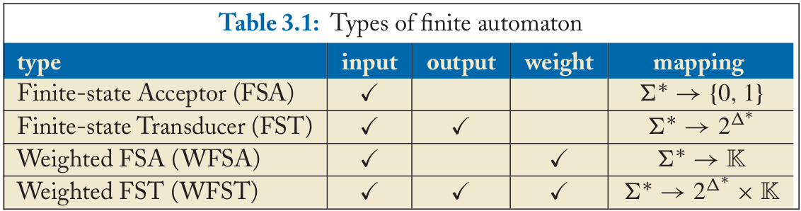
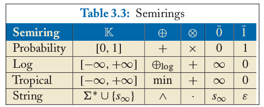

Title: SoPa: Bridging CNNs, RNNs, and Weighted Finite-State Machines
Authors: Roy Schwartz, Sam Thomson, Noah A. Smith
Source: ACL2018
基础知识
Finite Automata (FA)
四种FA对比

FSA represents a set of symbol sequences that can be accepted.
FST can describe a set of rules for conversion or transduction from one symbol sequence to another.
Semiring
将加权有限状态接收器/转换器中的权重及其二元运算（“加”和“乘”）规范化定义。类似于一个新的空间（类比于矩阵的内积空间），对各种运算有新的定义。
Semiring定义：$(\mathbb{K}, \oplus, \otimes, \bar{0}, \bar{1})$
例子：

其中 $x \oplus_{\log} y = -\log(e^{-x}+e^{-y})$
WFSA要素
- $\Sigma$: 输入集
- $Q$: 有限状态集，大小为$d$。其中$I, F\subseteq Q$分别是初始/终止状态
- $\mathbf{T}$: 权重转移矩阵，$\Sigma\cup\lbrace\epsilon\rbrace\to\mathbb{R}^{d\times d}$
- $\pi,\eta\in\mathbb{R}^d$ : 初始/终止权重向量
Notes
概述
利用WFSA的思路构建新的神经网络结构，用于text classification
基本思路
- 定义k个长度不同的patterns，每个pattern都是一个有d个states的WFSA
- 用k个patterns对一个doc中的所有span打分，得到k个score
- 这k个score组成的向量作为MLP/RNN的输入
细节
对于一个pattern，一个长度为n的word sequence输入，记作$\mathbf{x}$，按照如下公式打分：
$$
P_{span}(\mathbf{x})=\pi^T\mathbf{T}(\epsilon)^\ast\left(\prod_{i=1}^{n}\mathbf{T}(\mathbf{x}_i)\mathbf{T}(\epsilon)^\ast\right)\eta
$$
其中，$\mathbf{T}(\epsilon)^\ast\approx \mathbf{I}+\mathbf{T}(\epsilon)$为一阶近似，转移权重矩阵为
$$
\mathbf{T}(\mathbf{x})=
\begin{cases}
E(\mathbf{u}_i\mathbf{v}_x+a_i)& \text{$j=i$}\\
E(\mathbf{w}_i\mathbf{v}_x+b_i)& \text{$j=i+1$}\\
0& \text{otherwise}
\end{cases}
$$
其中E为sigmoid或者identity函数，$\mathbf{u}_i \mathbf{w}_i$为可训练的权重向量。对于为可训练的权重向量。对于为可训练的权重向量。对于为可训练的权重向量。对于$\epsilon$转移：
$$
\mathbf{T}(\mathbf{x})=
\begin{cases}
E(c_i)& \text{$j=i+1$}\\
0& \text{otherwise}
\end{cases}
$$
这里的计算均是基于Semiring中的计算法则，本文中采用max-product，即
$$
\begin{align}
A \oplus B &= max(A, B) \
A \otimes B &= maxmul(A, B) \
\left[maxmul(A, B)\right]_{i,j} &= \max_k{A_{i,k}B_{k,j}}
\end{align}
$$
定义$eps(\mathbf{h})=maxmul(\mathbf{h}, max(\mathbf{I}, \mathbf{T}(\epsilon)))$，代表$\mathbf{h}\mathbf{T}(\epsilon)^\ast$，维护一个d维state向量$\mathbf{h}_t$:
$$
\begin{align}
\mathbf{h}0&=eps(\pi^T)\
\mathbf{h}{t+1}&=\max(eps(maxmul(\mathbf{h}t, \mathbf{T}(x{t+1}))), \mathbf{h}_0)\
s_t&=maxmul(\mathbf{h}_t, \eta)
\end{align}
$$
经过反复更新最终可以得到一个值，即上边公式的计算值。$s_t$计算时等于取state向量的最后一维。注意以上计算是针对一个pattern一个span来说的，而对于一个文档的打分是在所有可能的span中取最大值。